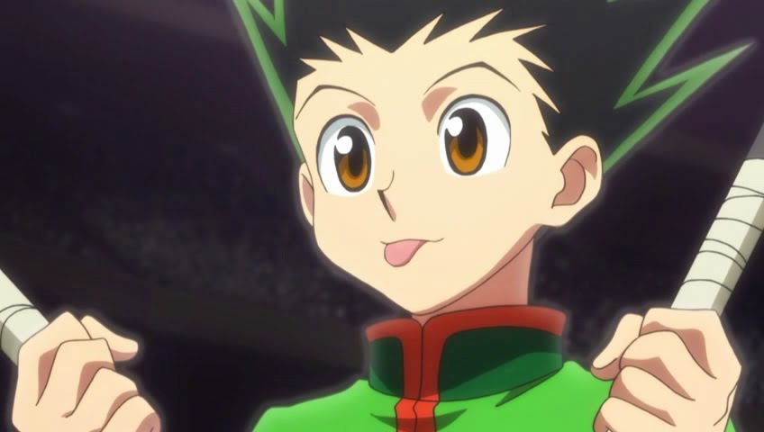
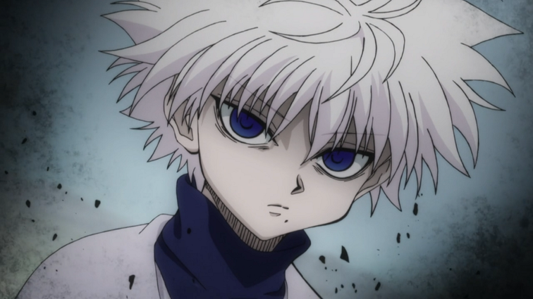
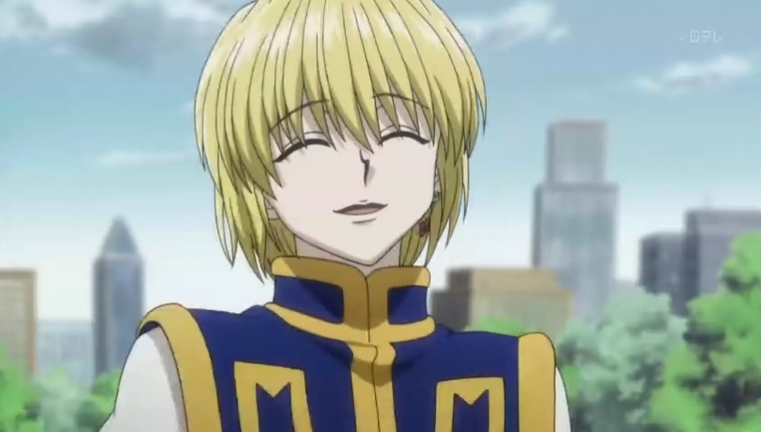
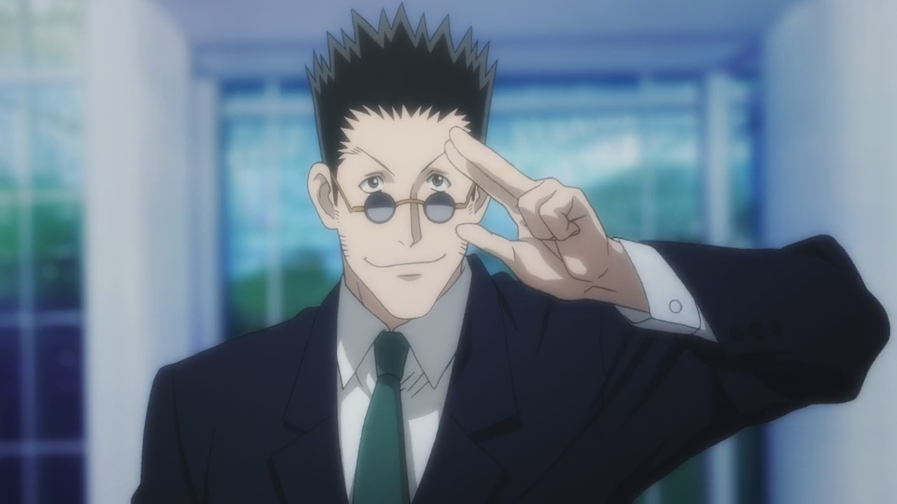
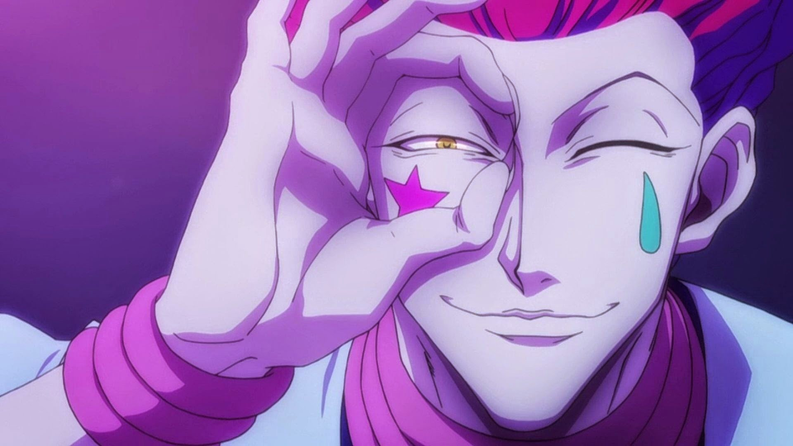

自小生長在鯨魚島的小傑小時候因誤入母狐熊的勢力範圍，就快要被攻擊時，一名路過、名叫凱特的男子救了他。原來凱特是他的父親──金的徒弟，凱特告訴小傑許多關於他的父親及獵人相關的事情，因此小傑對金及獵人這個職業有很大的憧憬。他在考試的過程中結識酷拉皮卡、雷歐力、奇犽等好友，並與西索結下再戰之緣。最後，在互相幫助下小傑通過試驗成為獵人。
第一男主角，強化系能力者。他為了尋找父親而踏上成為獵人的道路。
男主角之一，變化系能力者。是傳說中暗殺家族－揍敵客家族血脈。
男主角之一，被幻影旅團滅族的窟盧塔族倖存者，只要情緒激動的時候，雙眼就會變成緋紅色的「火紅眼」。具現化系能力者（眼睛變成火紅眼時是特質系能力者）。
男主角之一，放出系能力者。經常穿著西裝，提著菱形圖樣的皮箱，留著黑短髮，配戴一副墨鏡，其瞳孔為棕色，身材高挑的男性。
變化系能力者。能一眼就辨識出他人資質，有時還會替他人打分數，喜歡與強者對戰感到興奮，對於沒有實力也沒有利用價值的人完全不想理。其個性多變，很難猜透他心中的想法。
